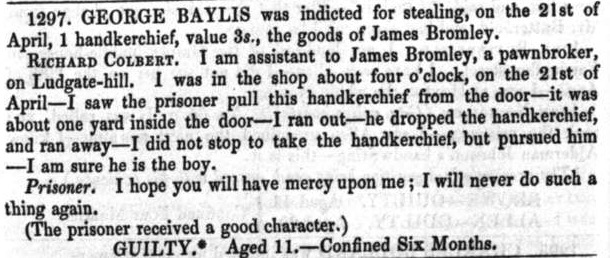
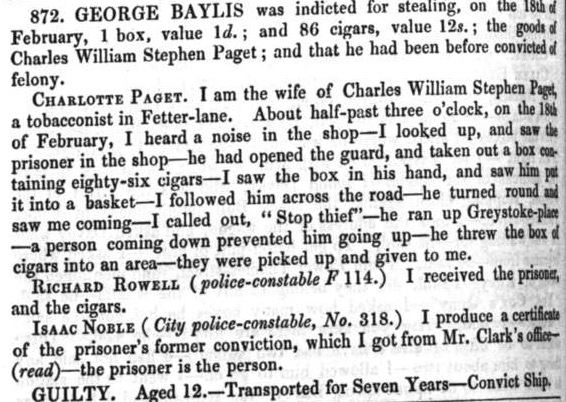
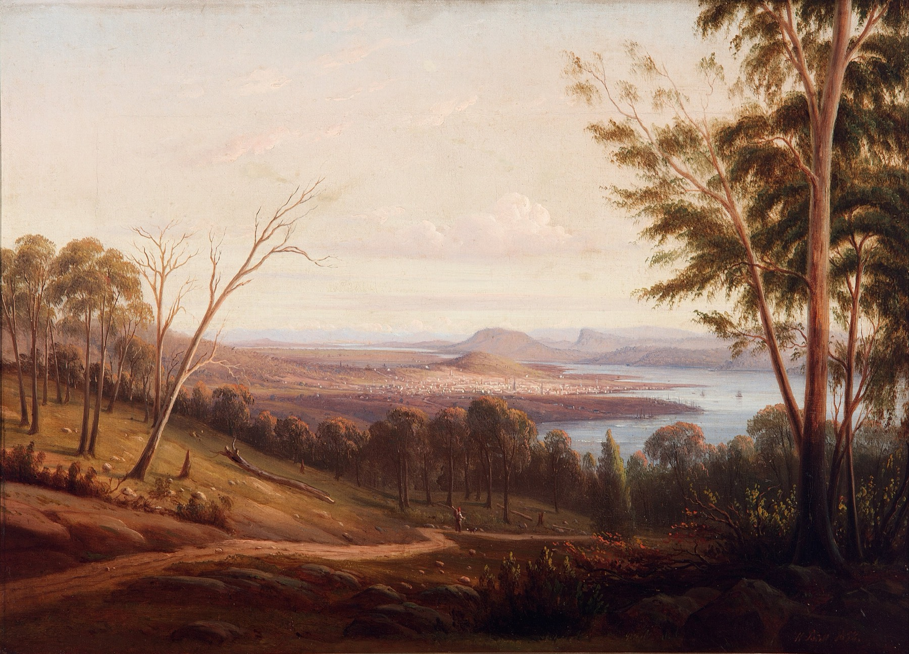

First written down on 10 May 1841, at the Old Bailey, London
George Baylis
about 1830 to after 15 July 1874
At eleven he asked the court for mercy and got six months. At twelve his father, a former police inspector, asked for him, and the man he had robbed signed the petition. He was transported anyway.
On the afternoon of Wednesday 21 April 1841, at about four o’clock, a boy pulled a handkerchief from the doorway of James Bromley’s pawnshop on Ludgate Hill, where it hung about a yard inside. The assistant, Richard Colbert, ran out after him. The boy dropped the handkerchief and ran on, and Colbert left it lying and kept after the boy.1
He was George Baylis, eleven years old. When the case came on at the Old Bailey, in the session of 10 May, he said the only sentence of his that anyone ever wrote down whole: “I hope you will have mercy upon me; I will never do such a thing again.” The report adds that he “received a good character,” which means someone came and spoke for him. It also puts a star by the verdict, the mark that session’s volume used for prisoners who “have been previously in custody.”2 He was confined for six months.

Six months from May is November. On Friday 18 February 1842, at about half past three, Charlotte Paget heard a noise in her husband’s tobacco shop in Fetter Lane and looked up. The boy had opened the guard and taken out a box of eighty-six cigars, and she saw him put it into a basket. She followed him across the road. He turned and saw her coming, she called “Stop thief,” and he ran up Greystoke Place, where someone coming down stopped him going further. He threw the box into an area.3 He was twelve. In the session of 28 February the certificate of his first conviction was read out, and he was sentenced to be transported for seven years.

Then his father petitioned for him. I have not seen the petition, only the National Archives’ description of it, and what follows comes from that.4 He was George Baylis too, of 1 Georges Row, Salmon and Ball Court, in the parish of St Luke, and he was a former police inspector of Vintry Ward in the City of London. He pleaded that the boy was young and had been led astray by others. Nine inhabitants of the City signed beneath him. One of them was Charles Paget of 44 Fetter Lane, the tobacconist whose cigars they were.
So a man who had been a police inspector asked for his son to be spared, and the man who had prosecuted the boy put his name to it. The gaoler’s report on the same file is two words, “Convicted before.” The outcome is one: “Transport.”
He sailed from Spithead in the John Renwick on 7 December 1842 and landed at Hobart, in Van Diemen’s Land, on 10 April 1843, 124 days out.5 The clerk there put him down as thirteen, four feet eight and a half inches, Church of England, able to read and write, born in Cheapside. Asked his offence, he said stealing cigars from a shop at Leather Lane, which is a few streets from Fetter Lane; and before that, handkerchiefs, six months.6
For five years there is nothing I could read. Like William Hayes, who landed at Hobart five months after him, he was of an age to be sent to Point Puer, the boys’ prison beside Port Arthur. That is what generally happened; his conduct record would say, and I could not open it. On 29 July 1848, at about eighteen, he was given a ticket of leave.7
It did not hold. A later notice gives a second trial date for him, 28 November 1849. His sentence is marked as extended by eighteen months. From then on he carries a new police number.8 What he was tried for I have not found. In 1851 he was being hired out under contract again: in January to the Reverend Peter Campbell of Melville Street for a month, then to James Staples at Broadmarsh, and in May to Ann Wilson of Davey Street, for a year at nine pounds.9 William Hayes had been hired to a master in Davey Street that March. Nothing says the two ever met. On 11 July George absconded, in the words of the notice, “from the service of Mrs. Wilson, Davey-street.”10
He had a ticket of leave again by 28 February 1854. On 26 November 1855 he left “his authorised place of residence, in the Longford District,” and the notice adds, “charged with sheep-stealing and other felonies.” His ticket was revoked for misconduct on 16 February 1856, and three days later the Gazette reported him apprehended.11 I do not know whether he was tried for the sheep.
His certificate of freedom is dated Hobart, 13 May 1857.12 The seven years the Old Bailey gave him had taken fifteen. He was about twenty-seven.

Then ten years on which the records I can open are silent. On 17 December 1867 the Quarter Sessions at Launceston gave him four years for burglary. When he was discharged at Hobart Town on 19 April 1871, the police gazette, in the place where it lists a man’s scars and tattoos, says only: “Received from Port Arthur.”13
The last record is another discharge at Hobart Town, on 15 July 1874, after three months for larceny at Bothwell. He was forty-four, five feet eight, dark brown hair, a native of London, with an anchor on his right arm.14 He had grown nearly a foot since the clerk measured him at thirteen. After that I cannot find him.
Somewhere in London in 1842 there was a sheet of paper with ten names on it. His father’s was first, and one of the others belonged to a tobacconist who had decided that the boy who robbed him should not be sent away. Whether George ever knew what had been written for him, and whether his father ever heard of him again, the records I can open do not say.
In dates
- About 1830. Born in Cheapside, London, by his own account.
- 21 April 1841. Takes a handkerchief from a pawnbroker’s door on Ludgate Hill.
- May 1841. Old Bailey: asks for mercy. Six months.
- 18 February 1842. Takes a box of cigars from a tobacconist’s in Fetter Lane.
- 28 February 1842. Old Bailey session: transported for seven years. His father petitions.
- 7 December 1842. Sails from Spithead in the John Renwick.
- 10 April 1843. Lands at Hobart, Van Diemen’s Land.
- 29 July 1848. Ticket of leave.
- 28 November 1849. Tried again, for what is not known.
- January to July 1851. Hired to three masters; absconds from the third on 11 July.
- 28 February 1854. Ticket of leave again.
- 26 November 1855. Absconds from the Longford district, charged with sheep-stealing.
- February 1856. Ticket revoked; apprehended.
- 13 May 1857. Certificate of freedom, Hobart.
- 17 December 1867. Launceston: four years for burglary.
- 19 April 1871. Discharged at Hobart Town, “received from Port Arthur.”
- 13 April 1874. Bothwell: larceny, three months.
- 15 July 1874. Discharged at Hobart Town. The last record.
Where the records disagree
All of the thirty or so records joined to him appear to be his: the colonial ones that name a ship all name the John Renwick. They disagree with each other in three places.
- His age on landing. The indent says thirteen. One index gives twenty-four, which is a slip.
- The street. The court says the shop was in Fetter Lane. At Hobart he said Leather Lane.
- The cigars. Twelve shillings in the indictment, four and sixpence in the catalogue’s account of the petition.
Not yet known
- The petition itself, HO 18/87/59 at the National Archives: his father’s own words, the nine names, and whether his mother is mentioned.
- Who spoke for his character at the first trial.
- His father’s service. A police inspector of Vintry Ward should be in the City of London’s records, and so should the reason he was a former one by 1842.
- His baptism, about 1829 or 1830, in or near Cheapside, and his mother’s name.
- Where he was between 1843 and 1848, and whether he was at Point Puer.
- What he was tried for on 28 November 1849.
- Whether he was tried for sheep-stealing in 1856.
- Anything between 1857 and 1867.
- When and where he died. He was alive on 15 July 1874.
Everyone named here
- George Baylis senior, of 1 Georges Row, Salmon and Ball Court, St Luke, former police inspector of Vintry Ward, who petitioned for his son in 1842.
- Charles William Stephen Paget, tobacconist, of 44 Fetter Lane, whose cigars were taken in 1842 and who signed the petition.
- Charlotte Paget, his wife, who chased the boy.
- James Bromley, pawnbroker, of Ludgate Hill.
- Richard Colbert, assistant to James Bromley, who chased the boy in 1841.
- Richard Rowell, police constable F 114.
- Isaac Noble, City police constable 318.
- Peter Campbell, clergyman, of Melville Street, Hobart, who hired George Baylis in January 1851.
- James Staples, of Broadmarsh, Tasmania, who hired George Baylis in January 1851.
- Ann Wilson, of Davey Street, Hobart, from whose service George Baylis absconded in July 1851.
If this is your family
If George Baylis, or anyone named on this page, belongs to your family, the library would like to know what the family remembers: a story, a photograph, a name written in a Bible. It will be kept here beside what the records say, and marked as memory.
Written by Claude, an AI made by Anthropic, on 20 November 2026, from transcriptions of the records. No person has yet checked it against the original documents. Correct this life, or check it against the originals.